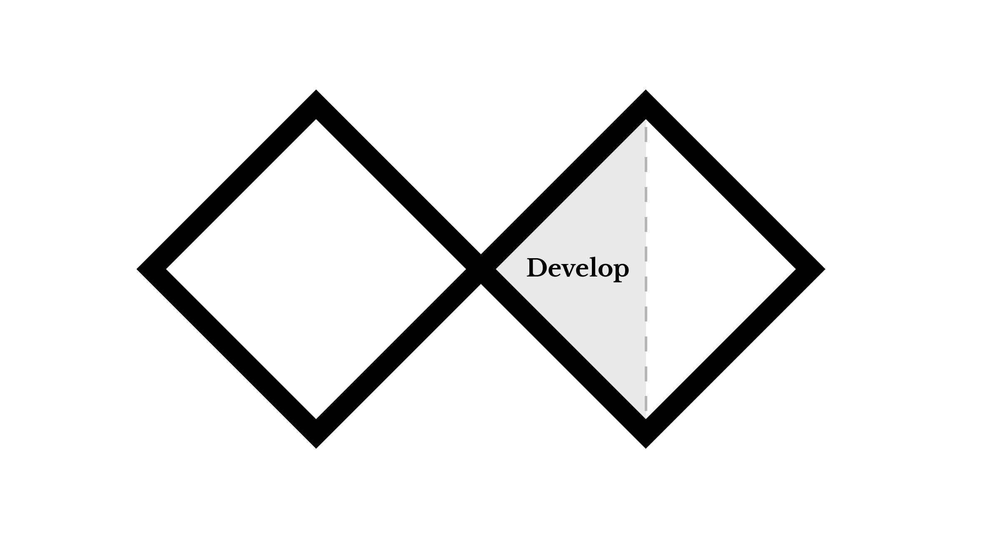

Develop: Test and review
Now that you have developed an experience, it is time to test the work. You will be assigned a partner, whom you will test your experience on. This is an opportunity to practice receiving and interpreting feedback, and to practice analyzing and collecting data on your design. A critique of your work might feel stressful at first, but it is one of the most common and useful processes in design.
Instructions
- Provide instructions to your partner to complete the experience.
- Review the instructions you have written for your own project and make edits before sending to your partner.
- Your project may have additional materials required for the person to complete the experience. Provide those to your tester as well.
- If you are not sent instructions, please request them from your partner. Review the instructions, ask for clarifications if needed, and test the experience.
- Write an analysis of the experience you are testing (your partner's project) with the following:
- Reviewer Name: Your name
- Title: "A review of 'Title of the project you are reviewing'"
- Projct designer: Partner's name
- Analysis:
- What is the purpose or intention of the experience? How do you know?
- Do you see a connection between the intention of the experience and the what you were asked to do in the instructions?
- Were you provided with everything required to complete the experience? If not, what did you need or what would be nice to have?
- What did you notice, think, feel, or assume about the experience?
- What went well and were there aspects that could be tweaked or improved?
- Read the feedback you have been given. To plan a course of action, you can categorize what was said into the following categories: "Working well," "Needs improvement", and "Suggestions or inspiration." Based on which category the feedback lands, you can analyze how to make decisions to improve your work.
Post work
Use the file format indicated in each step. You must obtain prior approval to deviate from these upload requirements. Please check that your work has uploaded properly.
Test analysis: Write the analysis in a MS Word .doc
- Copy the analysis you wrote about your partner's project to the Canvas discussion thread so others can easily read it.
- Attach the word doc of the analysis to the discussion thread.
- Read the analysis that was written about your project on the discussion thread.